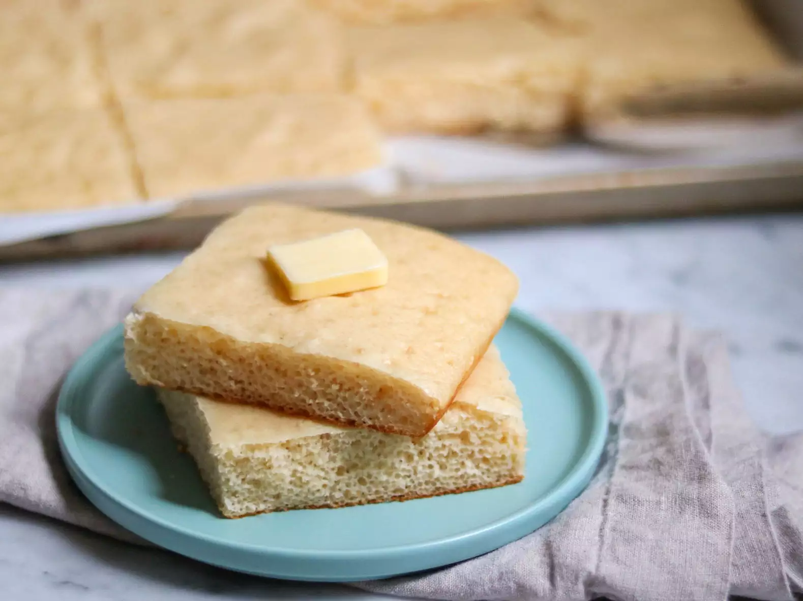

Pancakes

Ingredients
- cooking spray
- 3 cups baking mix
- 2 cups buttermilk
- 4 large eggs
- ¼ cup granulated sugar
- ½ teaspoon vanilla extract
- ¼ teaspoon ground cinnamon
Steps
- Preheat the oven to 350 degrees F (175 degrees C). Line a large sheet pan or jelly roll pan with parchment paper. Spray the parchment paper with cooking spray.
- Combine baking mix, buttermilk, eggs, sugar, vanilla extract, and cinnamon in a large mixing bowl. Mix until the ingredients are well combined, but don't overmix. Pour batter onto the parchment paper-lined pan.
- Bake in the preheated oven until lightly golden, 15 to 18 minutes.
- Remove sheet pan from the oven. Lift the parchment paper with the pancake from the pan and set it onto a cutting board. Slice the pancake sheet into squares using a pizza cutter or into your desired shapes with a cookie cutter.